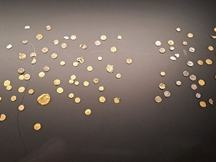
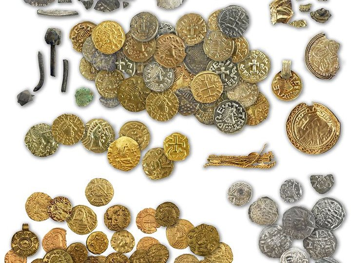

9. Muntschat Hezingen (590-700 n.Chr)


In het Springendal bij Hezingen is in 2019 een bijzondere verzameling voorwerpen gevonden uit de vroege middeleeuwen, rond de 7e eeuw na Christus. Het gaat om gouden en zilveren munten, sieraden en andere kostbare objecten.
De vondsten lagen niet op één plek, maar in meerdere concentraties dicht bij elkaar. Ze werden gevonden bij een kruispunt van oude wegen, samen met sporen van houten palen en andere structuren. Dat wijst erop dat dit geen nederzetting of grafveld was.
Onderzoekers zien dit gebied daarom als een cultusplaats, een plek waar mensen rituelen uitvoerden en waardevolle voorwerpen offerden. Waarschijnlijk gebeurde dit niet één keer, maar regelmatig, door verschillende groepen uit de regio.
Het gaat dus niet om een verborgen schat die iemand veilig wilde bewaren. De objecten zijn juist bewust achtergelaten als geschenk, waarschijnlijk aan goden of hogere machten.
Deze plek wordt gezien als het grootste en best onderzochte Merovingische cultuscomplex van Nederland. “Merovingisch” verwijst naar de vroege middeleeuwen, de tijd van ongeveer 450 tot 750 na Christus.
Zo laat het Springendal zien hoe belangrijk rituele plekken in het landschap waren, waar mensen goud en zilver offerden op een vaste, betekenisvolle plaats.